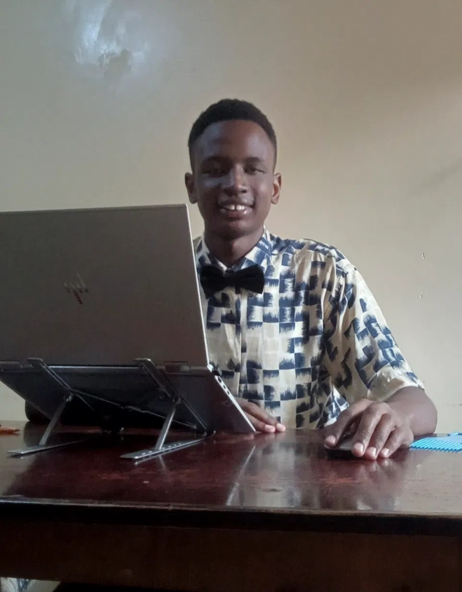

Open to internships & engineering opportunities
Hi, I’mMathew.
I build intelligent systems that move ideas into reality.
Computer Science student at DeKUT, AI developer and product builder exploring the intersection of software engineering, artificial intelligence and data.
- 1st placeDeKUT hackathon with DeKUT Hub Curry
- 1 of 8selected to co-develop the Kiswahili Grammar Tutor

01 / What I do
Magic happens behind the doors.
02 / Project laboratory
Things I’ve built, and what I learned.
03 / Technology constellation
Tools I actually use.
Select a technology
My story
Let’s go back in time.
05 / Engineering philosophy
I don’t just want to use technology. I want to understand it, challenge it and build what comes next.
- Build to understand.
- Learn by shipping.
- Solve real problems.
- Think beyond the obvious.
- Keep experimenting.
Available for internships & new projects
Got a project? Let’s build it together.
I’m looking for internships and engineering roles where I can build real products. Tell me what you’re working on and I’ll get back to you quickly.